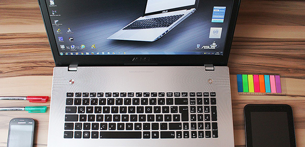

先週のブログでは、新しいPCを選ぶところから物作りのスゴさについてお話ししました。今回はその続報です。たかだかPC選びのはずなのに予想外に手間取ってしまいましたが、ようやく決定しました。PanasonicのMX4という12.5インチ画面の機種です。この機種、前回記事で候補に挙げた2機種と比べて尖ったところはありませんが、いろいろな先進技術が詰め込まれています。
PanasonicのLet’s noteシリーズは、ビジネスで使われるノートPCのシェアがとても大きいようです。私も名前は当然知っていましたが、しっかり調べるまでは「なんかやたら高いPCだな」と思うだけで、購入候補に挙がったことはありませんでした。それが、今回のPC選びでいろいろ説明を読んでみると、値段の高さも納得です。故障の際の修理体制が整っているのを筆頭に、かゆいところに手が届く細かい仕掛けが満載なのです。ノートPCを仕事で使っていて「こういうところが嫌だな」と思うところを先回りして全てつぶしている。この制作者の「想像力」がとてもすばらしい。
前回は主に技術的な工夫について触れましたが、PCは人間が直接使う道具です。技術だけではなく、「使いやすさ」という無形の技術も欠かせません。一般的にこの部分を突き詰めて洗練された使用感を作り出しているのはappleだと言われています。iPhoneの画面スクロールや文字入力の方法など、ごく当たり前に、自然に使えている裏には、凄まじく細かい配慮がなされていることを知ると、値段の高さもしょうがないなと思えるでしょう。デザインやイメージの上では正反対といってもよいappleのmacbookとPanasonicのLet’s noteですが、その根本的な姿勢はそれほど違わないのかもしれません。
大学入試（高校入試でも）では、「ユニバーサル・デザイン」という言葉がよく登場します。文化や言語、身体的な障害の有無にかかわらず、どんな人でも快適に使えるデザインのことです。入試問題だと、車いすの人でも動きやすいよう建物の中の段差をなくすバリアフリーなどと絡めてよく出題される言葉ですが、見渡してみると、私たちの生活の中には既にユニバーサル・デザインを標榜する思想が随所に顔を出します。PCの技術的な進化が止まりつつあると言われる近年、様々な製品と差をつけるためには、このように地味な使いやすさのブラッシュアップがとても重要になります。しかし、私たち消費者にはこの使いやすさは分かりづらいものです。実際に使ってみて初めて分かるありがたさですから。
購入したものの、まだ手元に届いていない新PC。届いたら折に触れてレビューしてみたいと思います。